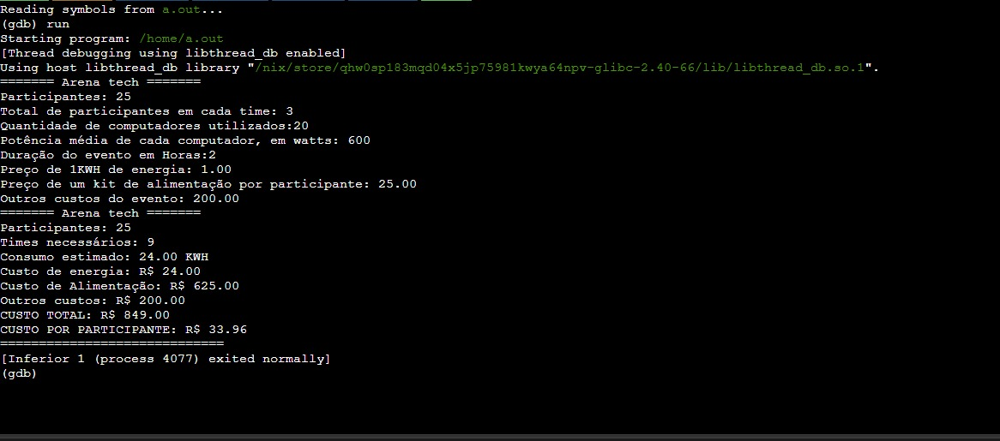

Filipe Pires Oliveira
Estudante de Ciências da Computação
Sobre mim
Sou estudante de Ciências da Computação, atualmente focado na aprendizagem de C, HTML, CSS e JavaScript. Tenho desenvolvido projetos práticos utilizando C e HTML, e procuro expandir constantemente as minhas competências técnicas através de cursos complementares.
Formação e Cursos
-
Ciências da Computação (2º semestre)
Cruzeiro do Sul Educacional - Em curso -
Introdução à Ciência de Dados (60 horas)
FGV Online - Concluído em 10/06/2026 -
Microsoft Excel 2016 - Básico (15 horas)
Fundação Bradesco - Concluído em 10/06/2026
Competências
Técnicas
- Básico: C, Python, HTML, CSS, JavaScript
- Intermediário: Pacote Office
Comportamentais
- Liderança e Trabalho em Equipe: Experiência na coordenação de grupos acadêmicos e liderança de equipes profissionais, delegando tarefas e organizando processos.
- Resolução de Problemas e Agilidade: Capacidade de atuar rapidamente no cumprimento de prazos e na busca de soluções eficientes.
Projetos

Algoritmos e Pensamento Computacional
Objetivo: Coletânea de soluções lógicas para problemas matemáticos, como cálculo de potência, IMC, conversão de horas e o projeto Arena Tech.
Tecnologias: C e HTML.
Acessar RepositórioCurrículo
Faça o download do meu currículo atualizado para conhecer mais sobre a minha trajetória profissional.
Baixar Currículo PDFContato
- E-mail: lipeoliveira382@hotmail.com
- LinkedIn: linkedin.com/in/filipe-pires-oliveira
- GitHub: github.com/Filipe0704